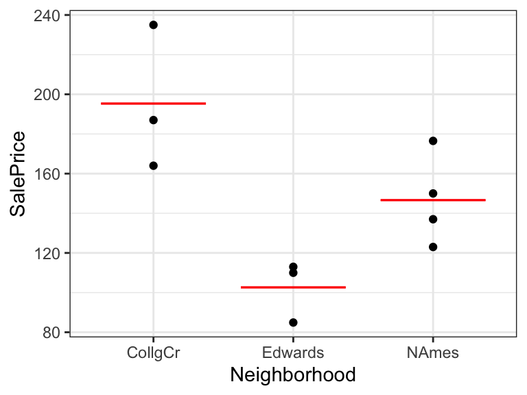

Chapter 2 Exploring Data
2.1 Section 1.1: Exploratory Data Analysis
2.1.1 Exploring Movie Data
Learning Outcomes:
- Read data into R.
- Perform exploratory data analysis.
- Create and interpret data visualizations.
- Create new variables and change variable types.
See the R code guide for more examples and explanation.
We'll explore a dataset with information on films released between 2007 and 2013.
2.1.2 Visualizing Data 1
2.1.3 Visualizing Data 2
2.1.4 Visualizing Data 3
2.1.5 Importing and Exploring Data
Load the tidyverse package:
library(tidyverse)Load a .csv file:
HollywoodMovies <- read.csv("https://www.lock5stat.com/datapage2e/HollywoodMovies.csv")Load a .txt file:
HollywoodMovies <- read.csv("https://www.lock5stat.com/datapage2e/HollywoodMovies.txt")Load a .xls or .xlsx file:
library(readxl)
HollywoodMovies <- read.excel("HollywoodMovies.xlsx")Load data already part of an R package:
library(Lock5Data)
data("HollywoodMovies")2.1.6 Previewing the Data - glimpse()
The glimpse() command gives an overview of the dataset.
glimpse(HollywoodMovies)## Rows: 970
## Columns: 16
## $ Movie <fct> "Spider-Man 3", "Shrek the Third", "Transformers", "P…
## $ LeadStudio <fct> Sony, Paramount, Paramount, Disney, Warner Bros, Warn…
## $ RottenTomatoes <int> 61, 42, 57, 45, 78, 69, 93, 31, 26, 60, 97, 90, 14, 9…
## $ AudienceScore <int> 54, 57, 89, 74, 82, 69, 91, 72, 73, 90, 84, 78, 72, 8…
## $ Story <fct> Metamorphosis, Quest, Monster Force, Rescue, Quest, Q…
## $ Genre <fct> Action, Animation, Action, Action, Adventure, Thrille…
## $ TheatersOpenWeek <int> 4252, 4122, 4011, 4362, 4285, 3606, 3660, 3832, 3475,…
## $ OpeningWeekend <dbl> 151.1, 121.6, 70.5, 114.7, 77.1, 77.2, 69.3, 44.8, 44…
## $ BOAvgOpenWeekend <int> 35540, 29507, 17577, 26302, 17998, 21411, 18929, 1168…
## $ DomesticGross <dbl> 336.53, 322.72, 319.25, 309.42, 292.00, 256.39, 227.4…
## $ ForeignGross <dbl> 554.34, 476.24, 390.46, 654.00, 647.88, 328.96, 215.3…
## $ WorldGross <dbl> 890.87, 798.96, 709.71, 963.42, 939.89, 585.35, 442.8…
## $ Budget <dbl> 258.0, 160.0, 150.0, 300.0, 150.0, 150.0, 110.0, 130.…
## $ Profitability <dbl> 345.30, 499.35, 473.14, 321.14, 626.59, 390.23, 402.5…
## $ OpenProfit <dbl> 58.57, 76.00, 47.00, 38.23, 51.40, 51.47, 63.00, 34.4…
## $ Year <int> 2007, 2007, 2007, 2007, 2007, 2007, 2007, 2007, 2007,…2.1.7 Factor and Numeric Variables
- Categorical variables take on groups or categories, rather than numeric values. In R, these might be coded as logical
<logi>, character<chr>, factor<fct>and ordered factor<ord>.- Example: (Studio, Genre)
- Quantitative variables take on meaningful numeric values. These include numeric
<num>, integer<int>, and double<dbl>.- Example( Budget, World Gross, AudienceScore)
2.1.8 Filtering and Selecting
Let's narrow down the dataset to comedies, action movies, and dramas, and focus in on the variables Movie, Genre, WorldGross, RottenTomatoes, AudienceScore. and Profitablity
filter()narrows down to certain rowsselect()narrows down to certain columns
Movies_Subset <- HollywoodMovies %>%
filter(Genre %in% c("Comedy", "Action", "Drama", "Horror")) %>%
select(Movie, Genre, WorldGross, RottenTomatoes, AudienceScore, Profitability)2.1.9 Exploratory Data Analysis
The first steps in any data analysis should be to explore the data to become familiar with its structure, and take note of any unusual features.
Look for:
- Missing values
- Unusual observations
- Misspecified variable types
It is good to create some graphical and tabular summaries to help us find trends in the data.
2.1.10 Previewing the Data - head()
The head() command displays the first 6 rows of the dataset.
head(Movies_Subset)## Movie Genre WorldGross RottenTomatoes
## 1 Spider-Man 3 Action 890.87 61
## 2 Transformers Action 709.71 57
## 3 Pirates of the Caribbean: At World's End Action 963.42 45
## 4 300 Action 456.07 60
## 5 The Simpsons Movie Comedy 527.07 90
## 6 Wild Hogs Comedy 253.62 14
## AudienceScore Profitability
## 1 54 345.30
## 2 89 473.14
## 3 74 321.14
## 4 90 701.64
## 5 78 702.76
## 6 72 281.802.1.11 Previewing the Data (summary)
summary(Movies_Subset)## Movie Genre WorldGross RottenTomatoes
## All About Steve : 2 Comedy :177 Min. : 1.10 Min. : 0.00
## (500) Days of Summer: 1 Action :166 1st Qu.: 36.26 1st Qu.:24.00
## 12 Rounds : 1 Drama :109 Median : 77.50 Median :44.00
## 12 years a slave : 1 Horror : 52 Mean : 146.66 Mean :46.42
## 17 Again : 1 : 0 3rd Qu.: 175.23 3rd Qu.:68.00
## 2012 : 1 Adventure: 0 Max. :2781.50 Max. :97.00
## (Other) :497 (Other) : 0 NA's :18 NA's :19
## AudienceScore Profitability
## Min. :19.00 Min. : 3.68
## 1st Qu.:46.00 1st Qu.: 143.03
## Median :57.00 Median : 240.03
## Mean :58.44 Mean : 374.12
## 3rd Qu.:72.00 3rd Qu.: 367.83
## Max. :93.00 Max. :6694.40
## NA's :19 NA's :252.1.12 Histogram of Audience Scores
Density plots show the distribution for a quantitative variable like audience score. Scores can be compared across categories, like genre.
ggplot(data=Movies_Subset, aes(x=AudienceScore)) + geom_histogram(color="white", fill="lightblue") +
ggtitle("Distribution of Audience Scores") + xlab("Audience Score") + ylab("Frequency") +
theme_bw()
The distribution of audience scores is roughly symmetric, and centered around 50-60. Most movies have scores between 25 and 90.
2.1.13 Density Plots of Audience Scores
Density plots show the distribution for a quantitative variable like audience score. Scores can be compared across categories, like genre.
ggplot(data=Movies_Subset, aes(x=AudienceScore, color=Genre, fill=Genre)) + geom_density(alpha=0.2) +
ggtitle("Distribution of Audience Scores") + xlab("Audience Score") + ylab("Frequency") + theme_bw()On average, dramas tend to score higher than action movies, comedies, and horror movies.
2.1.14 Boxplot
Boxplots display the minimum, lower quartile, median, upper quartile, and maximum.
ggplot(data=Movies_Subset, aes(x=Genre, y=AudienceScore)) + geom_boxplot() + ggtitle("Audience Score by Genre") +
xlab("Genre") + ylab("Audience Score") + coord_flip() + theme_bw()Dramas have the highest median score. There is more variability in scores for dramas and action movies than for comedies and horror movies.
2.1.15 Boxplot with Datapoints
Each box or whisker contains 25% of the datapoints.
ggplot(data=Movies_Subset, aes(x=Genre, y=AudienceScore)) + geom_boxplot() + geom_jitter() +
ggtitle("Audience Score by Genre") + xlab("Genre") + ylab("Audience Score") + coord_flip() +
theme_bw()2.1.16 Violin Plot
Violin plots are a variant on boxplots that show where distributions are most heavily concentrated.
ggplot(data=Movies_Subset, aes(x=Genre, y=AudienceScore, fill=Genre)) + geom_violin() +
ggtitle("Audience Score by Genre") + xlab("Genre") + ylab("Audience Score") +
theme(axis.text.x = element_text(angle = 90)) + theme_bw()Action movies, dramas, and horror films most commonly score between 40 and 60. Dramas most often score highly (above 60), but there are some that score much lower.
2.1.17 Scatterplot
Scatterplots are useful for comparing two quantitative variables. Additional variables can be displayed using size, color, and shape.
ggplot(data=Movies_Subset, aes(x=RottenTomatoes, y=AudienceScore, color=Genre, size=WorldGross)) +
geom_point() + ggtitle("Audience and Critics Ratings") +ylab("Audience Rating") + xlab("Critics' Rating") +
geom_text(data = Movies_Subset %>% filter(WorldGross >800), aes(label = Movie), color="black", check_overlap = TRUE) + theme_bw()2.1.18 Scatterplot (cont.)

There is positive roughly linear relationship between audience and critics ratings. There is, however, a lot of variability in ratings. Most of the highest grossing films are action movies. The highest grossing films tend to get good ratings from the audience, but not necessarily from critics.
2.1.19 Creating New Variable
The mutate() function is useful for creating new variables.
In the data description, the variable Profitability is defined as WorldGross as a percentage of Budget. Thus, films for which Profitability exceeds 100 were profitable.
We create a variable to tell whether or not a film was profitable.
Movies_Subset <- Movies_Subset %>% mutate(Profitable = Profitability > 100)summary(Movies_Subset$Profitable)## Mode FALSE TRUE NA's
## logical 71 408 252.1.20 Profitability by Genre
Bar graphs display relationships between categorical variables.

There does not appear to be a big difference in profitablility by genre.
2.1.21 Correlation Plots
Correlation plots display the strength and direction of linear relationships between quantitative variables.
library(corrplot)
Corr <- cor(select_if(HollywoodMovies, is.numeric), use="complete.obs")
corrplot(Corr)
2.1.22 Tabular Summary
The group_by() and summarize() commands are useful for creating tabular summaries of data.
Movies_Subset %>% group_by(Genre) %>%
summarize(N = n(),
Mean_Gross = mean(WorldGross, na.rm=TRUE),
Median_Gross = median(WorldGross, na.rm=TRUE),
StDev_Gross = sd(WorldGross, na.rm = TRUE),
PctProfitable = mean(Profitable, na.rm=TRUE)*100) %>%
arrange(desc(Mean_Gross))## # A tibble: 4 x 6
## Genre N Mean_Gross Median_Gross StDev_Gross PctProfitable
## <fct> <int> <dbl> <dbl> <dbl> <dbl>
## 1 Action 166 246. 127. 319. 84.8
## 2 Comedy 177 104. 70.8 107. 85.7
## 3 Drama 109 89.6 55.2 111. 83.3
## 4 Horror 52 81.5 64.6 64.4 88.22.1.23 kable()
The kable() command, which is part of the knitr package produces tables with professional appearance.
MoviesTable <- Movies_Subset %>% group_by(Genre) %>%
summarize(N = n(),
Mean_Gross = mean(WorldGross, na.rm=TRUE),
Median_Gross = median(WorldGross, na.rm=TRUE),
StDev_Gross = sd(WorldGross, na.rm = TRUE),
PctProfitable = mean(Profitable, na.rm=TRUE)*100) %>%
arrange(desc(Mean_Gross))
kable(MoviesTable)| Genre | N | Mean_Gross | Median_Gross | StDev_Gross | PctProfitable |
|---|---|---|---|---|---|
| Action | 166 | 245.50790 | 127.232 | 318.76282 | 84.75610 |
| Comedy | 177 | 103.72219 | 70.840 | 106.91791 | 85.71429 |
| Drama | 109 | 89.58977 | 55.247 | 111.31833 | 83.33333 |
| Horror | 52 | 81.52383 | 64.630 | 64.42613 | 88.23529 |
2.1.24 Converting between Numeric and Factor
Year could reasonably be treated as a numeric or factor variable.
Let's convert it from numeric to factor.
HollywoodMovies$Year <- as.factor(HollywoodMovies$Year)When converting from factor to numeric, we must perform the intermediate step of converting to character. Going directly from factor to numeric can lead to unexpected and nonsensical results.
HollywoodMovies$Year <- as.numeric(as.character(HollywoodMovies$Year))2.2 Section 1.2: Tidy Data
2.2.1 Representations of Data
Data can be displayed in many different tabular forms. We'll discuss one useful form, called tidy data.
Learning Outcomes:
Define tidy data.
Recognize when data are tidy form.
Consider the following representations of the same dataset, which dispays the number of tuberculosis cases in different countries, relative to population.
2.2.2 Representation 1
| country | year | cases | population |
|---|---|---|---|
| Afghanistan | 1999 | 745 | 19987071 |
| Afghanistan | 2000 | 2666 | 20595360 |
| Brazil | 1999 | 37737 | 172006362 |
| Brazil | 2000 | 80488 | 174504898 |
| China | 1999 | 212258 | 1272915272 |
| China | 2000 | 213766 | 1280428583 |
2.2.3 Representation 2
| country | year | type | count |
|---|---|---|---|
| Afghanistan | 1999 | cases | 745 |
| Afghanistan | 1999 | population | 19987071 |
| Afghanistan | 2000 | cases | 2666 |
| Afghanistan | 2000 | population | 20595360 |
| Brazil | 1999 | cases | 37737 |
| Brazil | 1999 | population | 172006362 |
| Brazil | 2000 | cases | 80488 |
| Brazil | 2000 | population | 174504898 |
| China | 1999 | cases | 212258 |
| China | 1999 | population | 1272915272 |
| China | 2000 | cases | 213766 |
| China | 2000 | population | 1280428583 |
2.2.4 Representation 3
| country | year | rate |
|---|---|---|
| Afghanistan | 1999 | 745/19987071 |
| Afghanistan | 2000 | 2666/20595360 |
| Brazil | 1999 | 37737/172006362 |
| Brazil | 2000 | 80488/174504898 |
| China | 1999 | 212258/1272915272 |
| China | 2000 | 213766/1280428583 |
2.2.5 Representation 4
Table A:
| country | 1999 | 2000 |
|---|---|---|
| Afghanistan | 745 | 2666 |
| Brazil | 37737 | 80488 |
| China | 212258 | 213766 |
Table B:
kable(table4b)| country | 1999 | 2000 |
|---|---|---|
| Afghanistan | 19987071 | 20595360 |
| Brazil | 172006362 | 174504898 |
| China | 1272915272 | 1280428583 |
2.2.6 Variables and Observations
In this example, we have observed data on various countries at different points in time. The record for a single country, in a given year is called an observation.
For each observation, we record the country, year, number of cases, and population. These are called variables.
2.2.7 Tidy Data
A dataset is said to be tidy when it satisfies the following conditions:
- Each variable has its own column.
- Each observation has its own row.
- Each value must has own cell.
In fact, any two of these imply the third.
2.2.8 Representation 1 Tidy
Representation 1 is in tidy form.
| country | year | cases | population |
|---|---|---|---|
| Afghanistan | 1999 | 745 | 19987071 |
| Afghanistan | 2000 | 2666 | 20595360 |
| Brazil | 1999 | 37737 | 172006362 |
| Brazil | 2000 | 80488 | 174504898 |
| China | 1999 | 212258 | 1272915272 |
| China | 2000 | 213766 | 1280428583 |
2.2.9 Representation 2 not Tidy
Representation 2 is not in tidy form.
- Observations are spread over multiple rows.
- The variables
casesandpopulationdo not have thir own column.
- The column
typecontains variable names, not values.
| country | year | type | count |
|---|---|---|---|
| Afghanistan | 1999 | cases | 745 |
| Afghanistan | 1999 | population | 19987071 |
| Afghanistan | 2000 | cases | 2666 |
| Afghanistan | 2000 | population | 20595360 |
| Brazil | 1999 | cases | 37737 |
| Brazil | 1999 | population | 172006362 |
| Brazil | 2000 | cases | 80488 |
| Brazil | 2000 | population | 174504898 |
| China | 1999 | cases | 212258 |
| China | 1999 | population | 1272915272 |
| China | 2000 | cases | 213766 |
| China | 2000 | population | 1280428583 |
2.2.10 Representation 3 not Tidy
Representation 3 is not in tidy form.
The variables cases and population do not have their own columns, but are combined in a single column called rate.
| country | year | rate |
|---|---|---|
| Afghanistan | 1999 | 745/19987071 |
| Afghanistan | 2000 | 2666/20595360 |
| Brazil | 1999 | 37737/172006362 |
| Brazil | 2000 | 80488/174504898 |
| China | 1999 | 212258/1272915272 |
| China | 2000 | 213766/1280428583 |
2.2.11 Representation 4 is not Tidy
Representation 4 is not in tidy form.
- The variable
yearis spread across multiple columns.
- The variables
casesandpopulationare spread over multiple tables.
| country | 1999 | 2000 |
|---|---|---|
| Afghanistan | 745 | 2666 |
| Brazil | 37737 | 80488 |
| China | 212258 | 213766 |
| country | 1999 | 2000 |
|---|---|---|
| Afghanistan | 19987071 | 20595360 |
| Brazil | 172006362 | 174504898 |
| China | 1272915272 | 1280428583 |
2.2.12 Why Use Tidy Data
Data are often easiest to work with when they are in tidy form
The
tidyverse()R package is useful for creating graphs, and calculating summary statistics when data are in tidy form.Sometimes there is good reason for data to not be in tidy form. This is ok, but it makes it harder to work with.
In this class, we will focus on data that are already in tidy form. However, if you come across data on your own, you should check that it is tidy before attempting to use the techniques we'll see in this class.
In CMSC/STAT 205: Data-Scientific Programming, we study how to convert data into tidy form if it is not already. More information can be found in R For Data Science by Wickham and Grolemund.